- Módulo: Sistemas Operativos
- Título del trabajo Plantilla HTML entrega de trabajo
- Componentes del grupo: Diego Gonzalez Abreu
- Curso Académico: 2013/2014
- Fecha de entrega: 29 de Enero de 2014
Vamo a instalar PDF Creator para simular como si tuvieramos una impresora
| 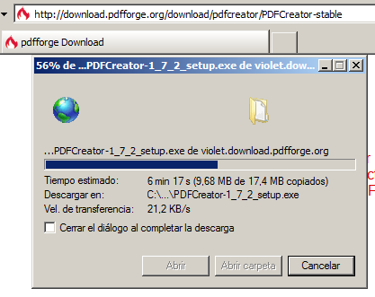 | 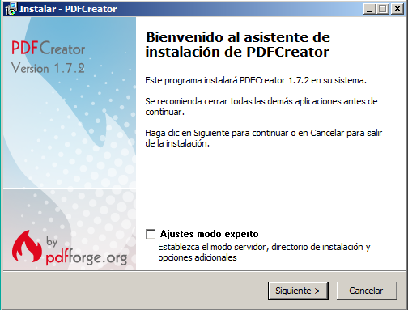 |
| 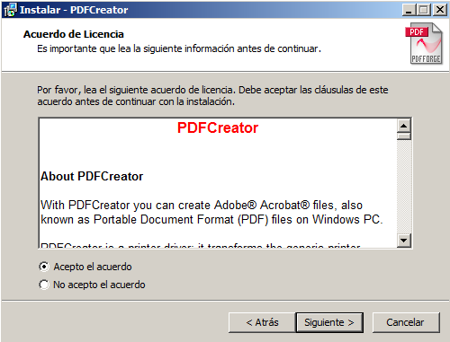 | 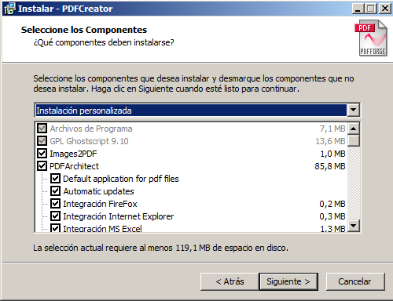 |
| 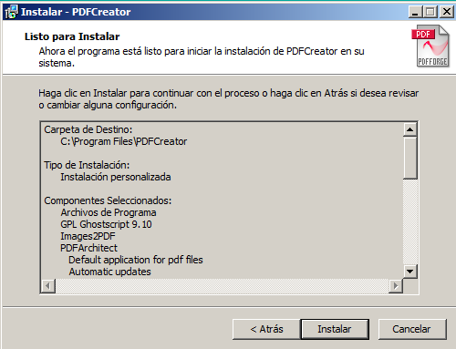 | 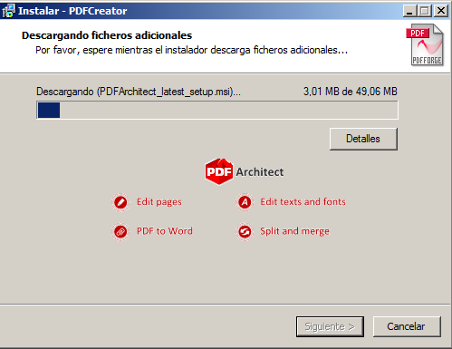 |
Despues de instalar PDF Creator ya tenemos la posibilidad de imprimir documentos en formato PDF
Vamos a instalar la funcion de servidor impresion en interntet

y despues de compartir la impresora podemos ir al navegador y acceder para poder gestionar las impresoras que tengamos.
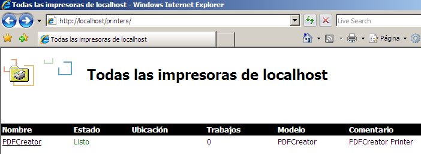En propiedades comprobamos que la disponibilidad esta lista
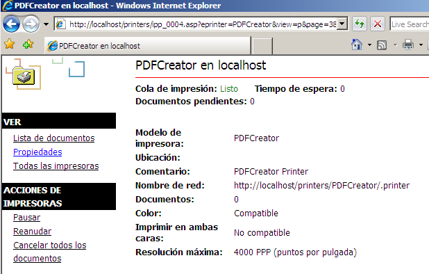Ponemos la cola de impresion pausada para ver los docmentos en lista de documentos
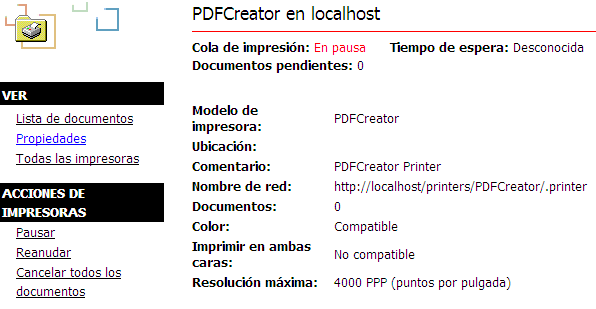Y la reanudamos para imprimir a pdf el archivo que estaba en la cola de impresion
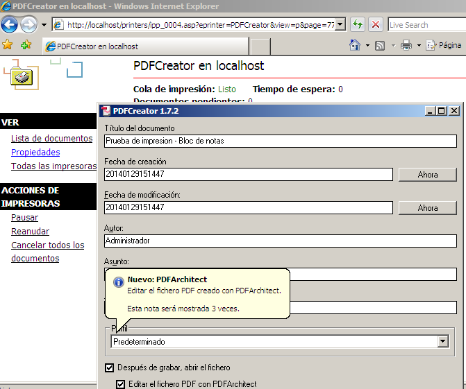 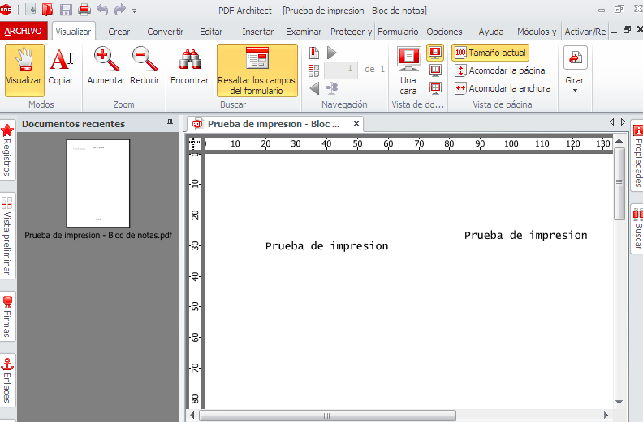Podemos acceder de manera sencilla y gestionar las impresoras que tengamos de manera centralizada y ademas restringir su uso dependiendo de los permisos con los que la compartimos